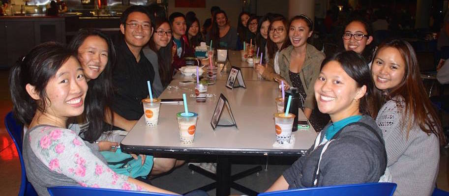
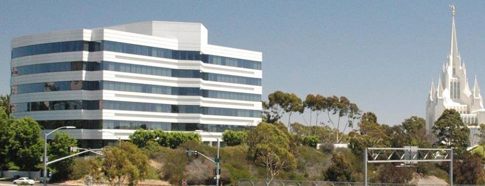
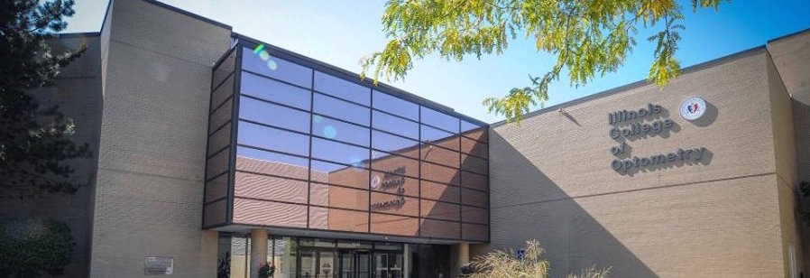
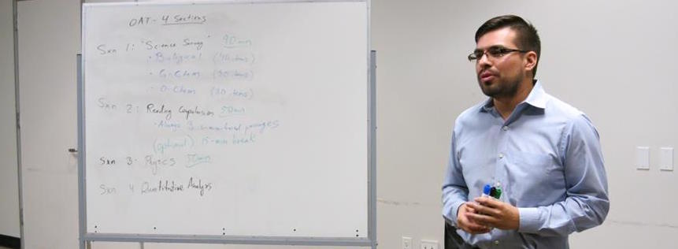

Insight GBM and Kaplan Presentation 
in the Earl Warren Room at 7:00pm - no RSVP required
View More Details
Welcome back from winter break insight!
Our first GBM of the winter quarter is coming up. Join us to find out about upcoming events and optometry school presentations. Don't miss out on the Kaplan presentation to learn more about taking the OAT.
Catch up with your Insight family members.
There will also be free food to munch on!
See ya there!
Insight NVision Laser Eye Center Tour 
It is at 3655 Nobel Dr. San Diego, CA 92122 at 9:00am - RSVP
View More Details
Ever wondered how a lasik eye center looks like?
Insight is planning a tour to NVision, one of San Diego's well known eye surgery facilities!
Visit one of San Diego’s local lasik center! The tour will show you around NVision's facilities and a chance to meet the surgeons at practice.
Rides will be arranged. Limited space available. Must be a paid member to attend. Also if you could provide rides, please let us know!
We are working on finalizing the date, so keep an eye out in your emails this week for a confirmation! If you have any questions, please feel free to reply back.
Thanks! We hope to see you there!
Insight GBM and Doctor's Panel 
in the Red Shoe Room at 6:30pm -no RSVP required
View More Details
Come out to our 2nd GBM of winter quarter!
Catch up with your mentors and mentees!
Learn more about our upcoming events and gain some insight on the field of optometry from some of the local doctor's in the area.
Here's the line up of optometrists:
Dr. David Weldon, O.D.
Dr. Henry Kikunaga, O.D.
Dr. Heather Jonasson, O.D.
Dr. Jason Tu, O.D.
Dr. Robert Grazian, O.D.
Hope to see you there!
Also, help Insight fundraise by bringing in your old empty ink cartridges! You can bring them to any of the upcoming events and give them to Phoebe Chen our treasurer.
ICO Presentation from a 
1st Year Optometry Student
in the ERC Room at 7:00pm - no RSVP required
View More Details
A first year ICO optometry student, Nasiem Ayoub, who is also a UCSD alumni, will be presenting to give her perspective as a student at ICO.
This is your chance to get more insight on schools and applications from an optometry student!
See you there!
Princeton OAT Presentation 
in the Dolores Huerta Room at 7:00pm - no RSVP required
View More Details
Join us as a representative from The Princeton Review discusses the Optometry Admission Test. There will be plenty of information on the test as well as studying tips you won't want to miss!
NECO Presentation and Tapex Social 
in the Green Table Room at 6:00pm - no RSVP required
View More Details
Come hear from a representative from the New England College of Optometry in Boston.
After the presentation plan to head over to Tapex for our fundraiser and join us for boba and fun!